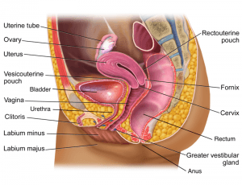

Woman!Your Vagina Speaks to You – Please Listen to It
The Vagina speaks to it’s owner literally.Girls and Women in general, always learn to listen to your respective Vaginas.Yes, the p*ssy does speak, and when it does, it speaks loud enough.There are always telltale signs and symptoms when all isn’t alright down there, and that’s the vagina’s language telling you that something is after all in a mess.Outlined below are some of the signs that your Vagina will signal when all isn’t okay down south.
1.Bad smell
Of course, each and every Vagina has a natural smell; however, when it becomes so strong and punchy, it could, after all, be a signal that you have an infection.A vaginal infection could ensue thanks to excess bacteria as well as an unbalanced pH.In such a case, one might experience a greenish discharge in case a sexually transmitted disease has attacked them.
2.Burning Sensation when urinating
This is a sign that you are suffering from a urinary infection such as cystitis.Other symptoms are:
Imperious and constant need to urinate Frequent urination in small quantities Blood in the urine Cloudy urine with a strong smell Pelvic discomfort A sensation of pressure in the lower abdomen
3.Vaginal dryness
Vaginal dryness mostly affects elderly women who are in their menopause stages; however, as a young lady, you are not immune to it either because it can also be caused by the use of fragrant soaps, vaginal showers, towels or tampons and even the detergent with which you wash your panties.
4.Vaginal Itchiness
Occasional vagina itchiness is usually nothing to worry about.However, if the itching is so frequent and annoying that it hinders you in your day to day activities, then it is time to do something about it.Itching is a result of irritation.Therefore, check whether you have recently had unprotected sex or used a new detergent for your underwear.It may equally be a signal that you have an STD or you could be experiencing an allergy.
Some common causes of an itchy vagina are:
5.Bleeding after sex
In this case, we aren’t referring to menstrual blood, but we are talking about the blood that you see after sex.Some of the causes of that are the use of contraceptives that create mismatches, or in extreme cases, it could equally be a sign of ovarian cancer.
6.Pain during sex
The clitoris is the organ of pleasure par excellence because being stimulated triggers an orgasmic response in a matter of minutes.The bad thing is when your partner stimulates it through oral sex, use of fingers or vibrators, and you instead end up feeling pain.In case of such, visit your doctor immediately so that the problem gets detected and solved.Leading a healthy intimate life is necessary for your personal and sexual comfort.So, Women always listen to your Vaginas.
[bsa_pro_ad_space id=4]
Share on Facebook Tweet Follow us
Posted On: 2019-08-24T00:00:00
Posted By: Susan Simpsons



Content Date: 2019-08-24
Download Date: 2021-07-08
Document ID: L0C04DDRK